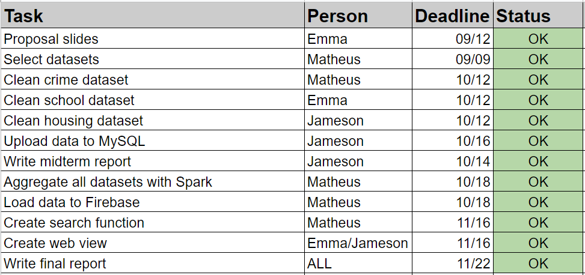
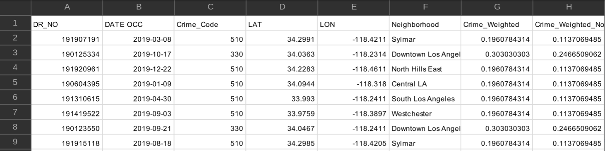
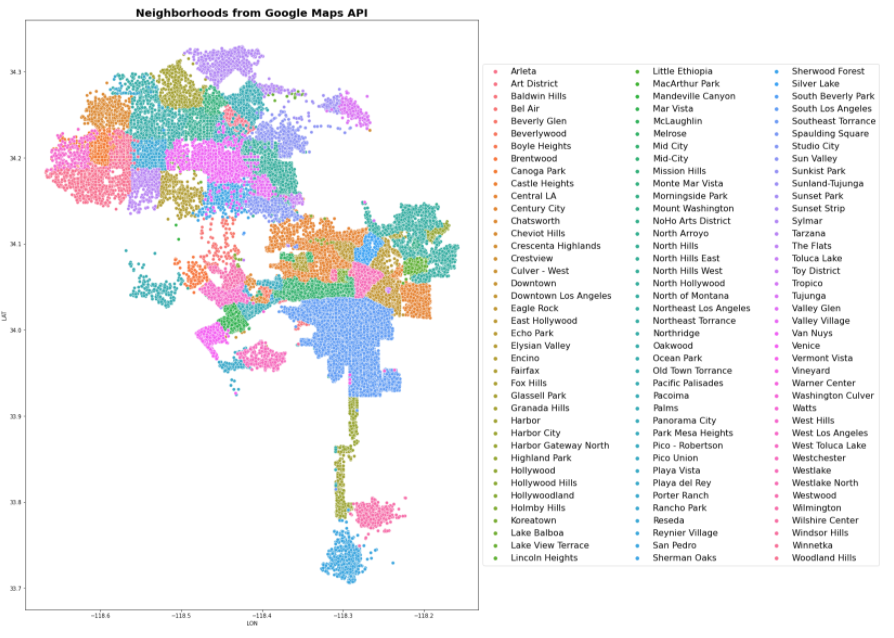
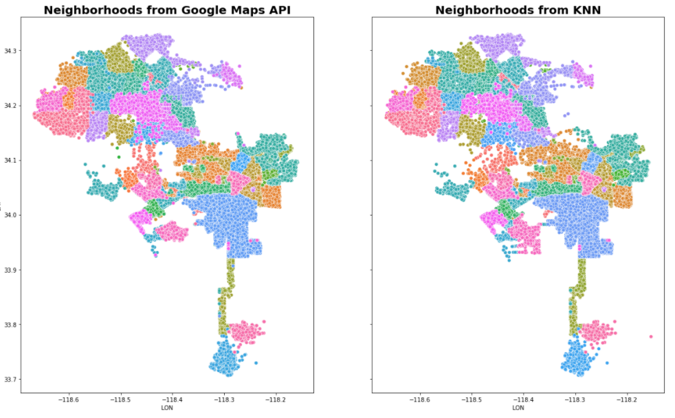
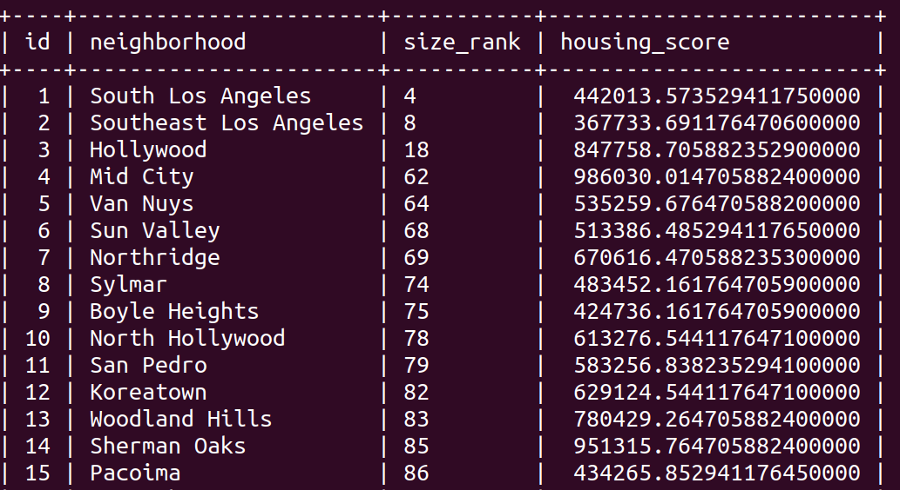
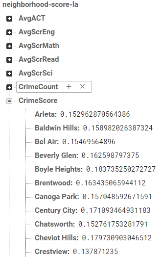
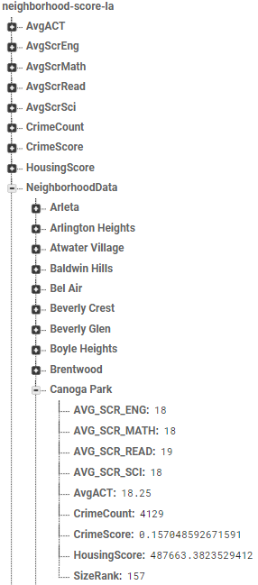
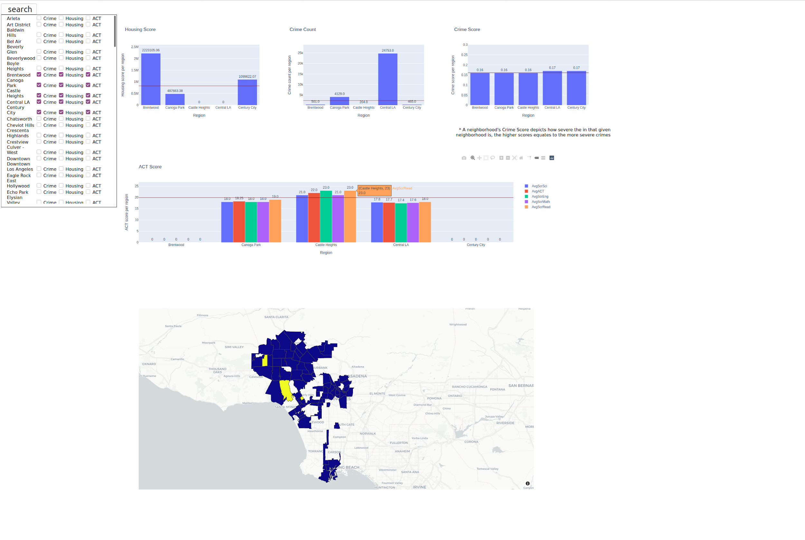
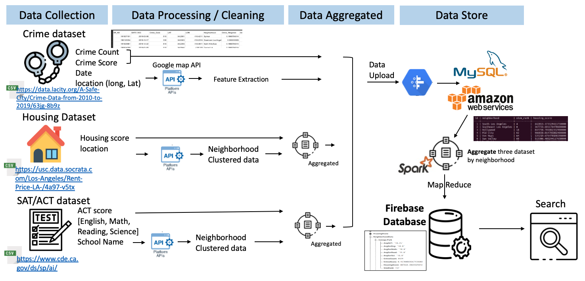

Los Angeles Neighborhood Score
Final Report
Matheus Schmitz, Jameson Thai, Yeonsoo Park
Project Presentation Video: Watch Here
Introduction
The City of Los Angeles, home to nearly 4 million residents, is a trailblazer in many aspects, including data transparency. The city’s open data portals contain publicly accessible datasets covering a multitude of aspects of life in the city, such as environment, economy, libraries and park, public safety, public services and more, with many datasets being updated weekly or even daily. This abundance of data was the inspiration for the team’s project, which envisions the creation of a comprehensive neighborhood quality of life comparison score, along with an accompanying visualization tool, allowing those interested in learning more about the city or seeking to move into one of its neighborhoods to easily access relevant information. The team behind the project is composed by Matheus Schmitz[1], a Product Manager with a degree in Industrial Engineering, along with Jameson Thai[2] and Emma Park[3], each with a background in Computer Science specializing in Data Science.
Along with the datasets provided by the official LA City webpage, other official sources were used to complement the projects portfolio of neighborhood evaluation metrics. In aggregate, the datasets used in this project come from the following websites: data.lacity.org, data.lacounty.gov, Geohub, cde, Zillow, USC’s Socrata, and US Census Bureau. The extensive number of topics covered by these websites allows for countless dimensions in which to analyse the data, however for this project the primary focus will be on three themes: crime, education and housing. The main source for education information is Geohub, a data visualization tool from the LA City open data portal, whereas the crime data comes directly from the City of Los Angeles open data portal, and housing data is sourced from Zillow and USC’s Socrata.
Project Timeline
Throughout the academic semester the team was able to stay ahead of schedule in developing the project, which by the midterm report was already 80% complete. The team’s effective progress can be attributed to diligent management of the project’s schedule and high commitment by the team’s members.

Following the team’s assembly, many potential project themes were debated, with the consensus being on the Los Angeles Neighborhood Score vision as the team’s favorite. Next, each of the three topics of focus was assigned to one team member, who was responsible for downloading the selected dataset, preprocessing it on a as-needed basis, then uploading it to a MySQL database hosted on AWS’ EC2. Below is a sample CSV containing crime data after it was processed and made ready for upload into MySQL.

Data Processing
One critical task was obtaining the neighborhood associated with each register in all gathered datasets, as neighborhoods were envisioned as the project’s final indexer for the obtained quality of life scores. The housing data happened to already come with neighborhood information in all its data points, dispensing any preprocessing to obtain them. The education dataset’s only georeference was school names, which were processed in the google maps API to obtain each school’s neighborhood. Because some schools had identical names to other schools outside of Los Angeles, this approach also generated data from neighborhoods outside of Los Angeles, which had to be removed with a second filter that allowed only LA neighborhoods through. To avoid data loss this filter was applied only later in the process, at the Spark stage. Lastly, the crime data came with the latitude and longitude associated with each record, which were also converted into neighborhoods through the google maps API.
Neighborhoods can be extracted from the google maps python API using the reverse_geocode() method, which takes a tuple of (latitude, longitude) and extracts all information related to that point in the globe. This information includes country, state, county, city, neighborhood and well as additional information for certain locations. As the data provided varies from one place to another, so does the structure of the API’s output, and hence it’s necessary to explore all elements in the json returned by the API until the element containing neighborhood data is found. Then the neighborhood name can be extracted and appended to the record from whose (latitude, longitude) tuple it originated. Below is the resulting geomap colored by neighborhood.

Feature Extraction
Feature extraction was a complex part of this project, as not only was it necessary to obtain neighborhoods for all records, it was also necessary to create scoring metrics for each of the prioritized topics, each of which required a customized and thorough approach, examples of which are given in the following paragraphs. For the housing and education data, after the scoring features were obtained, the data points were then aggregated by neighborhood, with the scores being averaged. With the preprocessing finished, the data was then saved into a CSV that is later read by a Python program into a MySQL database.
Data Wrangling
The housing dataset solely references Zillow’s research dataset on housing. This dataset contains time series data on the housing prices in various neighborhoods across the United States. This specific score was computed using Zillow’s internal evaluation, Zestimate. There are also additional identifiers such as SizeRank, RegionName, RegionType, StateName, State, Metro and CountyName. For our task, we solely looked at the housing prices in the 2019 timeframe while querying the RegionName that contains the neighborhood type based on State being California and Metro and CountyName containing Los Angeles. Since the neighborhoods are already included in the results, there is no need to utilize Google Maps API or the KNN algorithm to find or classify neighborhoods.
An interesting neighborhood comparison metric is the strength of the schools in each area. For this evaluation the ACT scores were obtained from the California Department of Education website which contains the school name and ACT average score for four sections - Reading, English, Math, Science. This raw data needed to be processed and cleaned to extract information features using the following workflow: First, utilize the google maps API to reverse school name to geolocation. Second, remove the record if the geolocation couldn't be found by google maps API. Third, aggregate the records based on neighborhoods. Contrary to the two other two datasets (Crime and Housing), ACT datasets contain only 211 records because there are around 200 high schools in LA.
The pipeline for getting the crime data to MySQL consisted of the following steps: First the dataset “Crime_Data_from_2010_to_2019.csv” was downloaded from the https://data.lacity.org/A-Safe-City/Crime-Data-from-2010-to-2019/63jg-8b9z page. The whole dataset contained 2 million records, covering years 2010-2019, using all of which proved too burdensome, hence only records for the year of 2019 were kept, totalling about 200k records. Those records already contained latitude and longitude, hence the second step consisted of using the google maps API reverse geocode method and obtaining the neighborhood in which the crime happened. Unfortunately the API has limitations, which stopped the queries after around 100k had been sent. This forced the team to resort to using a KNN algorithm to predict the neighborhoods for the rest of the data, which was step three. A train-test split showed this approach to be highly effective, as neighborhoods are by definition linearly separable classes in a low (two) dimensional space, about as ideal a setting for a KNN algorithm as one could hope for, resulting in a classification accuracy of 97%. The KNN algorithm’s excellent results can be verified in the image below, which visually compares the neighborhoods obtained from the Google Maps API (about 100K samples, all of which were used to train the algorithm) , and the neighborhoods from KNN (about 100k samples). Step four was the creation of a feature called “Crime_Weighted_Norm”, which was obtained by converting the “Crime Code” associated with each register. “Crime Code” indicates the crime committed, with lower crime code numbers representing more serious offenses - the full Crime Code encoding is available at https://data.lacity.org/api/views/63jg-8b9z/files/fff2caac-94b0-4ae5-9ca5-d235b19e3c44?download=true&filename=UCR-COMPSTAT062618.pdf. “Crime_Weighted_Norm” was obtained by applying two distinct transformations to the crime code associated with each record: first the scale was inverted, so that a higher number signified a more serious crime. This was achieved by dividing 100 (the lowest/most serious crime code) by the crime code of each data point, and as more serious crimes have a lower crime code, those instances will have a smaller divisor, and thus generate a larger number. The scale inversion was applied primarily to simplify understanding, as a high score on a crime metric is more easily associated with a more negative situation. Once this scaling was obtained, the values were then normalized, resulting in a feature in the [0,1] range, which simplifies the understandability of the data. Other columns on the original dataset amounted essentially to the full public police log on each crime, but contained no other relevant information for this project and were discarded. Lastly, step five was storing the final dataset into MySQL.

Store Individual Datasets
The MySQL database is hosted on an AWS EC2 instance. ID is a primary key and neighborhood names are a secondary key, with the neighborhood scores and other extraneous information as table attributes, all of which are shown in the image below. The extraneous information varied by dataset due to the what types of information that could be extrapolated from.

Data Merging - SparkSQL
In order to diversify the number of Spark use cases in the project, with the goal of enhancing the team’s learning, we opted to have the crime data be saved on MySQL as individual data points (200k data points), instead of storing data already aggregated by neighborhood. This allows for Spark to be used to MapReduce the crime data and aggregate it by neighborhood in a more scalable fashion (as well as allowing for extra learning). The Spark MapReduce pipeline took the “Crime_Weighted_Norm” feature that had already been extracted from the data prior to upload into MySQL, and averaged it by neighborhood, while also obtaining a second feature: the count of crimes per neighborhood, obtained by tallying the number of records registered in each neighborhood.
With the processing of the crime data finalized, the two other datasets, which had already been cleaned prior to being stored in MySQL, were loaded into Spark. At this stage all datasets were already aggregated by neighborhood, and thus could be merged using Spark SQL. A total of four Spark SQL dataframes were joined with the “fullouter” method, all of which were already indexed by neighborhoods. Those dataframes are (1) one containing the “Crime_Weighted_Norm”, renamed as “CrimeScore” to simplify comprehension, (2) another with the tally of crimes per neighborhood, a feature named “CrimeCount”, (3) a third with both features from the housing dataset (“HousingScore” and “SizeRank”), and (4) lastly a dataframe with all ACT scores (“AvgACT”, “AvgScrEng”, “AvgScrMath”, “AvgScrRead”, “AvgScrSci”). Thus up to nine features were obtained for neighborhoods that were contained in the three datasets, with some missing values being generated for neighborhoods inexistant in one of the datasets. Once the aggregation pipeline grouped all datasets using the join function, the resulting tabular dataset was then converted into JSON (dictionary) format, making the data suitable for upload to Firebase.
Firebase Architecture
In order to ease querying into the database, the Firebase architecture created was inspired on the homework 1 architecture, with each neighborhood score feature being stored twice: First following the index of {Feature: {Neighborhood_1: Value, Neighborhood_2, Value, …}} and second using the Neighborhood as the main index on a NeighborhoodData node, as in {NeighborhoodData: {Neighborhood_1: {Feature_1: Value, Feature_2: Value, …}, Neighborhood_2: {Feature_1: Value, Feature_2: Value, …}...}}. Both indexing structures can be seen in the figures below:

Benefiting from the dual-storage architecture of the Firebase database, three different search functions were developed, to most efficiently handle different scenarios. The first function is designed to deftly retrieve all information from one or multiple neighborhoods using the NeighborhoodData node in Firebase. The second function focuses on the inverse use case, whereby one or more metrics are informed and the score of each neighborhood is returned. The third function allows for dual filtering, where a set of neighborhoods and a set of features are given, and the matrix of resulting values is obtained. With regards to the backend implementation, all functions return a pandas dataframe containing the features as columns and the neighborhoods as rows. Such structure was chosen to simplify the ensuing data visualization step.
Web Application - Search Function
With an abundance of information, it was necessary to devise a method to inform users about the various neighborhoods. This was achieved by deploying a web-based infographic using Python Flask as our backend and basic html, css, and javascript to display the information. We utilized two types of Plotly mediums to visualize the dataset; bar charts and choropleth maps. Additionally we have a list of neighborhoods in Los Angeles that have three checkboxes representing the selection for the crime, housing, and ACT datasets. Those selections map to their corresponding graphs with crime generating a crime score and crime count, housing generating a housing score and ACT generating the aggregated average, science, reading, math, english scores. The horizontal lines across each of housing and crime graphs represent the averages across all neighborhoods in Los Angeles. The horizontal line in the ACT graph represents the average of the average ACT scores across all neighborhoods in Los Angeles. The other type of medium utilized to visualize the dataset is a modified choropleth map that displays queried neighborhoods as yellow and neighborhoods not queried as blue purple color. To represent the neighborhood boundaries, the data was sourced from USC’s DataSocrata that has Los Angeles neighborhoods in a GeoJson.

Workflow Summary
A brief summarization of the project’s overall workflow is: first datasets are cleaned; second neighborhoods and other features are extracted; third datasets are individually aggregated by neighborhood; fourth datasets are uploaded to MySQL; fifth data is read from MySQL to Spark; sixth neighborhoods are used as index to group all datasets; seventh a filter is applied to ensure only neighborhoods in the City of Los Angeles move forward; eight data is loaded to Firebase; ninth a search program processes a set of neighborhoods and features from a user; tenth data associated with the query is displayed to the user. The complete data pipeline for this project can be seen in the architecture diagram below.
Architecture Diagram

Final Words
This project proved to be a great source of learning for the team, as it’s focus on multiple datasets, from multiple sources, with multiple data processing and storage requirements allowed for experimentation with a variety of tools. Selecting a realistic use case strongly contributed to the team’s engagement and continued interest, as well as to the applicability of the learnings. There were several learning opportunities for the team, among the most significant ones were the challenges each team member faced in extracting neighborhood from his/her designated dataset, resulting in the need to use both google maps API as well as KNN. Not only did this step require ingenuity, it also fostered team collaboration, as one student’s solution could be adapted and replicated for the whole team. And perhaps the most unexpected learning experience came even before all of those, when the team had to consider the rules and expectations for the project and conceive an approach which would combine learning class-related topics with creating a realistic application and finding an exciting theme to work on, all of which were key contributors to this project’s level of success. An outstanding dynamic among team members as well as the team’s zealous organization of tasks allowed all requirements to be met without any peak in workload - a common source of lower quality deliverables. Although the formal delivery of the project is complete, the initial vision points to potential further developments, as more quality of life aspects can be easily incorporated into the project using the now-fleshed-out data processing pipeline.
Demo Video
https://drive.google.com/file/d/1mKvB7o6plAoONjIHIXIaKgQhE7tpPo8-/view?usp=sharing
Below are links to all data sources used.
Housing
https://www.zillow.com/research/data/
https://usc.data.socrata.com/Los-Angeles/Rent-Price-LA-/4a97-v5tx
School
https://www.cde.ca.gov/ds/sp/ai/
https://geohub.lacity.org/datasets/70baf6da243e40298ba9246e9a67409b_0/data
Crime
https://data.lacity.org/A-Safe-City/Crime-Data-from-2010-to-2019/63jg-8b9z
GeoJson for Los Angeles
https://usc.data.socrata.com/dataset/Los-Angeles-Neighborhood-Map/r8qd-yxsr
Our Firebase dataset can be found at:
https://neighborhood-score-la.firebaseio.com/.json
Github Repository
https://github.com/JamesonThai/DSCI551
Project Video
https://drive.google.com/file/d/1mKvB7o6plAoONjIHIXIaKgQhE7tpPo8-/view
[1] "Matheus Schmitz - Innovation Associate - FCC | LinkedIn." https://www.linkedin.com/in/matheusschmitz.
[2] "Jameson Thai - Course Producer - University of Southern ...." https://www.linkedin.com/in/jamesonthai.
[3] "Emma (Yeonsoo) Park - Course Grader - LinkedIn." https://www.linkedin.com/in/-emma-park.